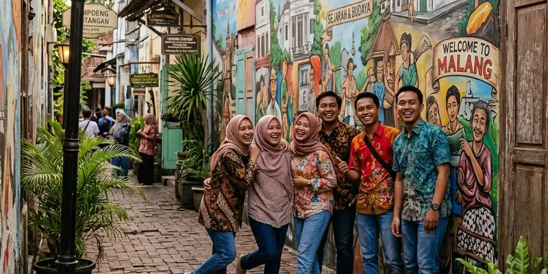

Kayutangan Malang menawarkan berbagai spot foto ikonik seperti rumah tua kolonial, sumur bersejarah, dan lorong bermural yang menjadikan kawasan ini favorit wisatawan pencinta konten estetik dan sejarah kota.
Ringkasan Inti
- Kayutangan memiliki sekitar 60 rumah tua yang teridentifikasi, dengan bangunan tertua dibangun pada 1870.
- Lorong-lorong sempit bermural menjadi salah satu spot foto favorit wisatawan di kawasan ini.
- Rumah-rumah tua dilengkapi plakat informasi usia bangunan dan sejarah pemilik pertamanya.
- Suasana malam hari dengan pencahayaan lampu temaram menambah daya tarik visual kawasan.
- Aktivitas ekonomi kreatif warga seperti kedai kopi turut memperkaya pengalaman wisata di Kayutangan.
Apa Saja Spot Foto Ikonik di Kayutangan Malang?
Spot foto ikonik di Kayutangan Malang meliputi deretan rumah tua bergaya kolonial, lorong sempit bermural, serta sudut-sudut kawasan yang menampilkan perpaduan arsitektur lama dan suasana khas perkampungan.
Beberapa spot yang sering menjadi favorit wisatawan:
- Deretan rumah tua bergaya Eropa di sepanjang Jalan Basuki Rahmat yang masih mempertahankan bentuk aslinya.
- Lorong-lorong bermural yang menggambarkan cerita sejarah kawasan Kayutangan dan kebudayaan lokal Malang.
- Sumur tua yang menjadi salah satu peninggalan bersejarah penting di Kampung Heritage Kayutangan.
- Sudut kawasan pada malam hari dengan pencahayaan lampu temaram yang mempertegas nuansa klasik era kolonial.
Bagaimana Sejarah Rumah Tua di Kawasan Kayutangan?
Sejarah rumah tua di kawasan Kayutangan bermula dari era kolonial Belanda, dengan bangunan tertua tercatat dibangun pada 1870 dan sebagian besar rumah lain dibangun pada rentang 1920 hingga 1940.
Berdasarkan identifikasi yang pernah dilakukan tim terkait, terdapat sekitar 60 rumah tua di kawasan ini yang relatif masih terjaga bentuk aslinya. Banyak di antaranya menggunakan model atap pelana yang dikenal dengan sebutan rumah jengki, serta memiliki dinding dengan ketebalan yang cukup besar sebagai ciri khas konstruksi bangunan lama. Setiap rumah umumnya dilengkapi plakat informasi mengenai usia bangunan dan sejarah pemilik pertamanya, sehingga wisatawan dapat mempelajari latar belakang kawasan sambil berkeliling.

Kombinasi mural artistik dan bangunan tempo dulu di lorong perkampungan Kayutangan menjadi latar foto yang unik dan kaya cerita.
Apa yang Membuat Kayutangan Cocok untuk Wisata Foto dan Konten?
Kayutangan cocok untuk wisata foto dan konten karena memadukan elemen visual bersejarah seperti arsitektur kolonial dengan sentuhan modern seperti mural warna-warni di sepanjang gang kawasan.
Perpaduan ini menciptakan kontras visual yang menarik bagi wisatawan maupun pembuat konten. Selain itu, lokasi kawasan yang berada di pusat kota membuat aksesnya mudah dijangkau tanpa perlu menempuh perjalanan jauh, sehingga cocok dikunjungi kapan saja, baik pagi, sore, maupun malam hari.
Bagaimana Suasana Kayutangan pada Siang dan Malam Hari?
Suasana Kayutangan pada siang hari cenderung lebih tenang dengan pencahayaan alami yang menonjolkan detail arsitektur bangunan, sementara pada malam hari kawasan ini tampil lebih semarak dengan pencahayaan lampu temaram khas suasana klasik.
Banyak wisatawan memilih datang pada sore hingga malam hari untuk menikmati perubahan suasana kawasan sekaligus mengabadikan momen dengan latar pencahayaan yang lebih dramatis dibandingkan siang hari.
Apa Kesalahan Umum saat Berfoto di Kawasan Kayutangan?
Kesalahan umum saat berfoto di kawasan Kayutangan adalah kurang memperhatikan privasi penghuni rumah tua serta mengabaikan etika berkunjung di area permukiman warga yang masih aktif dihuni. Beberapa hal yang perlu diperhatikan:
- Meminta izin terlebih dahulu apabila ingin berfoto terlalu dekat dengan rumah warga.
- Tidak menghalangi akses jalan warga sekitar saat sedang mengambil foto.
- Menjaga kebersihan kawasan dengan tidak meninggalkan sampah di sekitar lokasi foto.
Kesimpulan
Kayutangan Malang menawarkan kekayaan visual yang menjadikannya destinasi favorit bagi wisatawan pencinta sejarah maupun fotografi, mulai dari rumah tua kolonial hingga lorong bermural yang khas. Untuk merencanakan kunjungan secara lebih menyeluruh, silakan simak panduan wisata Malang kota yang bisa dipadukan dengan trip ke Batu serta itinerary sehari menjelajahi Malang kota dan sekitarnya.
FAQ Seputar Spot Foto dan Daya Tarik Kayutangan
Berdasarkan identifikasi yang pernah dilakukan, terdapat sekitar 60 rumah tua di kawasan Kayutangan Malang, dengan bangunan tertua dibangun pada 1870.
Waktu terbaik untuk berfoto di Kayutangan Malang adalah sore hingga malam hari saat kawasan ini dipenuhi pencahayaan lampu temaram yang menambah kesan klasik.
Kayutangan Malang termasuk kawasan permukiman warga yang masih aktif dihuni, sehingga wisatawan disarankan menjaga etika dan privasi penghuni saat berkunjung.